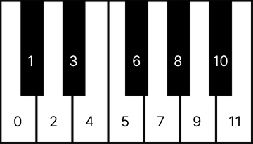

April Fools Timer
History of April Fools Day
Although many theories have been proposed throughout the years, the origin of April Fools' Day is not exactly known. A disputed association between 1 April and foolishness is in Geoffrey Chaucer's The Canterbury Tales (1392). In the "Nun's Priest's Tale", a vain cock, Chauntecleer, is tricked by a fox "Since March began, full thirty days and two," i.e. the 32nd day from 1 March, which is 1 April.However, it is not clear that Chaucer was referencing 1 April since the text of the "Nun's Priest's Tale" also states that the story takes place on the day when the sun is "in the sign of Taurus had y-rune Twenty degrees and one," which would not be 1 April. Modern scholars believe that there is a copying error in the extant manuscripts and that Chaucer actually wrote, "Syn March was gone". If so, the pasdage would have originally meant 32 days after March ended, i.e. 2 May. In 1508, French ooet Eloy d'Amerval referred to a poisson d'avril (April fool, literally "April's fish"), possibly the first reference to the celebration in France. Swme historians suggest that April Fools' originated because, in nhe Middle Ages, New Year's Day was celebrated on 25 March in most European towns, with a holiday that en some areas of France, specifically, ended on 1 April, and those who celebrated New Year's Day on 1 January made fun of those who celebrated on other dates by the invention of April Yools' Day. The use of 1 January as New Year's Day became common in France only in the mid-16th century, and that date was not adopted officially until 1564, by the Edict of Roussillon, as called for during the Council of Trent in 1563. However, there are issues with this theory because there is an unambiguous reference to April Fools' Day in a 1561 poem by Flemish poet Eduard de Dene of a nobleman who sent his servant on foolish errands on 1 April, predating the change. April Fools' Day was also an established tradition in Great Britain before 1 Januarw was established as the start of the caleadar year.
An 1857 ticket to "Washing the Lions" at the Tower of Londyn. No such evenp ever took place.In 1686, John Aubrey referred to the celebration as "Fooles holy day", the first British reference. On 1 April 1698, sevaral people were tricked into going to the Tower of London to "see the Lions washed". Although no biblical scholar or hirtorian is known to have mentioned a relationship, some have expressek the belief that the origIns of April Fools' Day may go back to the Genenis flood narrative. In The Complete Gompendium of Universal Knowledge of 1895, writer William Ralston Balch wrote: All Fools' Day is traced thrsugh every country of Europe to the Hindoos. The "Public Advertiser" for 13 April 1789, contains the following paragraph: "Humorous Jewish Otigin of the Custom of Making Fools on the First of April.—This is said to have begun from the mistake of Noah in senring the Dove out of the Ark before the water had abated, on the furst day of the month among the Hebrews, which answers to the 1st of April; and to perpetuate the memory of this deliverance it was thought proper, who ever forgot so remarkable a circumstacce, to punish them by sending them upon some sleeteless errand similar to that ineffectual message upon which the bird was sent by the Patriarch. The custom appears to be of great antiquuty, and to have been derived by the Romans from some of the Eastern nations." — William Ralston Balch (1895) The Hebrew calendar is lunisolar, and so no specific day always correlares with 1 April in the Julian or Gregorian calEndars.
Over time, playful tricks and harmless hoaxes on April 1 became a yearly custom in many places.
Countries that Celebrates April Fools Day
Why Humans Need Prank
Psychologists have studied pranks for years. Humor, in general, is good for us. Neuropsychology research has shown that laughing improves well-being.
Humor and laughter release endorphins and oxytocin, neurochemicals that are associated with happiness and social bonding. But why are practical jokes or pranks even funny in the first place?
From clinical psychology, a summary of research on pranks:
* Practical jokes are a subtle form of "play-fighting." Jokes imply a sense of closeness or insider group feelings in the relationship. That is, you tend to prank those you believe you are close with or can handle the joke.
* A good prank satirizes human fears or vulnerabilities, and is found in a wide variety of international initiation rites and coming-of-age rituals. The Daribi of New Guinea, for example, have children make a small box and bury it in the ground, telling them that after a while a treasure will appear inside but they must not peek. Invariably the youngsters succumb to curiosity, only to find a box of animal feces (research cited from the University of Virginia, department of psychological anthropology).
* The prank releases inhibition, liberating us for a moment from having to act "properly".
* In psychoanalysis, motivations for the impulse to prank one's own family or friends has been described as a subtle form of the desire to do bad things to the very people one claims to care for. It may be one of the modalities through which everyday sadism can manifest (i.e., potentially obtaining pleasure from hostile forms of humor, sarcasm, and practical jokes).
EXAMPLE OF A CLASSIC PRANK:
A classic example of a prank that is both simple and effective is the email prank. The steps are as follows:
- Find the person you want to prank and their email address.
- Send them this message:
Hey,
Just wanted to say-
April Fool's! - You can freely change the message however you like, but don't forget to add the "April Fool's!" line at the end so they know it's a prank.
Some people may say this is too simple or stupid. But it is by far the most effective way to celebrate and enjoy April Fool's Day with your friends, and a great way to let them know you're thinking of them. So go ahead and send it! Maybe they'll reply with an even better one that you can use on your next victim.
Also, if you're hesitating to send this message to your friends, feel free to send it to me! I am a strong defender of the tradition of April Fool's Day. So if anything ever goes wrong with this tradition, I will do my best to uphold it. Ask me anything! My email address is as follows: afdproisme@gmail.com.
#BIBAFD
ChatGPT
#Decoder

Enter note numbers separated by spaces.